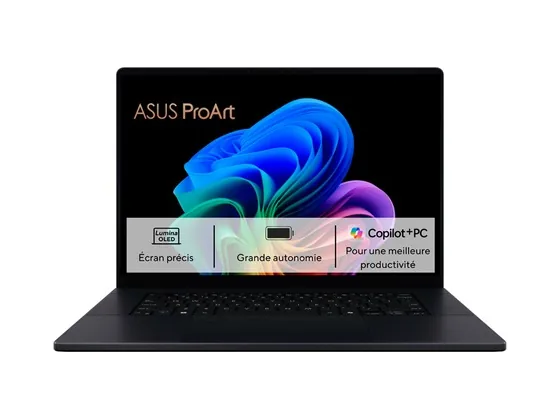
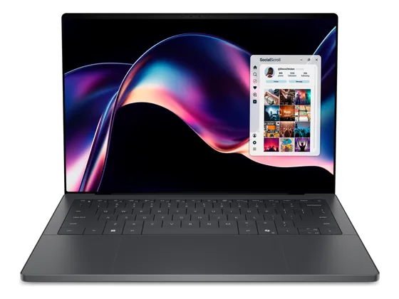
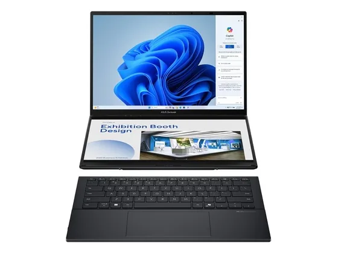
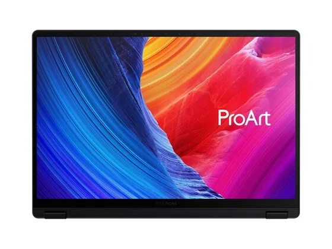

Asus ProArt P16 : avis, tests et prix
Le verdict en une phrase. Écran OLED tactile calibré, molette DialPad et carte graphique RTX : une vraie station de création mobile, lourde sur le budget.
N° 7 sur 10 dans le top 10 PC portables création.

Pour qui ?
Vous êtes créatif et voulez une station mobile : écran OLED tactile fidèle, carte RTX et lecteur de cartes SD.
Le prix est un critère, ou les reflets d'une dalle brillante vous gênent.
Le consensus de la presse
Sur 7 notes, 7 atteignent ou dépassent 8/10. La plus haute : 8,9/10 (Notebookcheck) ; la plus basse : 8,0/10 (Digital Camera World). Ces notes portent sur la gamme : configurations ou générations proches de celle vendue aujourd'hui. Dernier test relevé : juin 2025.
Où l'acheter
La configuration peut différer d'un marchand à l'autre : vérifiez la fiche avant d'acheter. Seuls les liens Amazon sont affiliés à ce jour ; les autres sont de simples liens directs. Aucun n'influence les notes ni le classement.
Tous les tests recensés
Chaque ligne renvoie vers le test d'origine. Les notes sont converties sur 10 ; « test » signale un article sans note chiffrée. Notre méthode.
- Notebookcheck8,9
- Notebookcheck8,9
- Fortress Of Solitude8,8
- Digital Camera World8,0
- Laptop Mag8,0
- TechRadar8,0
- Trusted Reviews8,0
- Android Headlinestest
- PCWorldtest
- RTINGStest
Source du relevé : Synthèse CommentChoisir.
Les alternatives pour le même usage
Tout le top 10 →
Dell XPS 14 (2026)Nouveau châssis très réussi, superbe écran et excellente autonomie : l'ultraportable premium de l'année, vendu au prix fort. N° 6 · Le double écran
Asus Zenbook DuoDeux écrans OLED superposés et un clavier détachable : un gain de surface de travail unique pour le montage et la retouche en déplacement. N° 8 · Le concentré de puissance
Asus ProArt PX13Un 13 pouces convertible qui embarque une puce Ryzen AI Max : des performances extrêmes dans un sac à main, avec une autonomie moyenne.Questions fréquentes
Que pense la presse de l'ordinateur Asus ProArt P16 ?
La note presse moyenne est de 8,4/10, calculée sur 7 notes (de 8,0 à 8,9/10). Écran OLED tactile calibré, molette DialPad et carte graphique RTX : une vraie station de création mobile, lourde sur le budget.
Quels sont les points faibles relevés par les tests ?
Prix très élevé ; Dalle brillante.
À qui s'adresse le modèle Asus ProArt P16 ?
Vous êtes créatif et voulez une station mobile : écran OLED tactile fidèle, carte RTX et lecteur de cartes SD. À éviter si : le prix est un critère, ou les reflets d'une dalle brillante vous gênent.
Où l'acheter, et à quel prix ?
Comptez environ 2 800 € (prix indicatif constaté en octobre 2026). Nous l'avons trouvé en vente chez Amazon et Darty. Les prix changent vite et la configuration peut différer d'un marchand à l'autre : seul le prix affiché par le marchand fait foi.